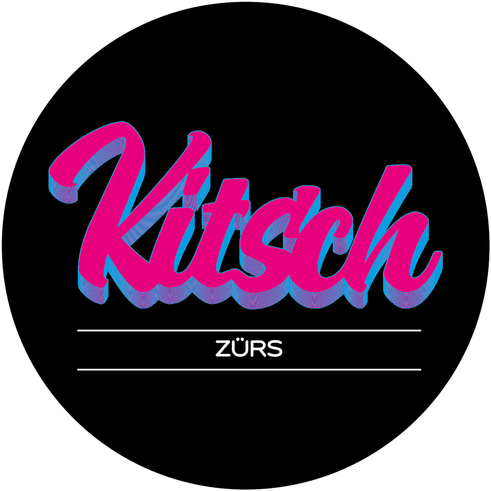

Danke für zwei besondere Jahre.
Danke für eure Besuche, euer Vertrauen und die vielen schönen Momente, die wir mit euch teilen durften.
Leider wird es für das KITSCH keine dritte Saison geben. Wir hätten euch gerne noch länger an unseren Tischen begrüßt.
Was bleibt, sind wunderbare Erinnerungen – und die Dankbarkeit, dass ihr Teil davon wart.
Von Herzen,
euer KITSCH-Team